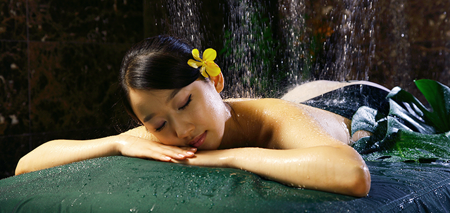

-

The essence of sensuous SPA treatment
Worldwide Spa brand 'Banyan Tree SPA' is the Asia's first luxurious oriental spa. There are around 90 spas in 20 countries since its opening Phuket in 1994 and it has been loved by people all around the world.
There are totally 11 treatment rooms in Banyan Tree Club & Spa Seoul and each room has individual bathroom and resting space. Spa suite is equipped with rainmist room for tropical rainmist experience and we have optimum environment for best spa.
Massage and body treatment inspired by traditional oriental healing therapy with natural ingredients such as herbs and medical plants are abolutely special you can experience in Banyan Tree. We don't rely on machine and use hands only with our philosophy "high touch, low tech". Well educated therapist from Banyan Tree SPA Academy treat exhausted body and mind.
Through the sensuous experience of comfortable Thailand style treatment room(vision), healing music(hearing) deluding yourself in nature, aroma scents(smell) from lavender to vergamot available to choose depends on your condition, organic tea and nuts(taste) after treatment etc., you can enjoy the essence of oriental spa treatment.
Massage
Massage
| Program | Treatment Time | Feature |
|---|---|---|
| Asian Blend | 60 / 90 min. | This massage is adapted from traditional Thai massage techniques. Palms and thumbs are applied to pressure points to relieve tired muscles and to improve blood circulation. |
| Balinese | 60 / 90 min. | The therapist applies thumb and palm pressure and firm strokes, complemented with a unique blend of essential oils with warming qualities. The massage stimulates blood circulation, improves energy flow and relieves tension. |
| Hot Stones Massage |
90 min. | Heated river stones are soothingly massaged over your body, along with the use of Sesame Oil, to exert warmth and pressure on energy points. Its powers are beneficial for smoother flow of “qi” and discharge of toxins from your system. |
| Island Dew | 60 / 90 min. | Long palm strokes and thumb pressure are applied to relieve tired muscles. The Soothing Oil, a harmonious blend of rose, plai, chamomile and Vitamin E, is used for its skin renewal and repair properties. |
| Lomi Lomi | 60 / 90 min. | Our therapist uses full body techniques, applied with rhythmic grace using thumbs, palms and elbows. It eases and loosens stressed muscles leaving the entire body feeling totally relaxed and refreshed. |
| Swedish | 90 min. | A distinctly-European, full body massage that stimulates blood circulation and soothes tense muscles. It uses a combination of three basic strokes, comprising long firm strokes, kneading strokes and small circular strokes, to relieve stress. |
| Tender Touch | 150 min. | Palm strokes are applied in tandem with a rice pouch dipped in warm oil, which has moisturising and softening properties to nurture the skin. Suitable for matured guests and expectant mothers. |
| Thai Classic | 60 min. | The therapist uses traditional Thai techniques and oil, applying deep palm strokes on the back with delicate stretching - the perfect combination to promote deep relaxation while improving flexibility. |
| Tui Na Massage | 330 min. | Adapted from the traditional Chinese massage, it improves blood circulation, alleviates soreness of the muscles and balances the body and mind. |
| Back Massage | 150 min. | For those who spend long hours working at the desk or encounter backaches, It serves as the perfect tension and ache relief to iron out the tension and pain. |
| Oriental Head Massage |
60 min. | It uses firm pressure applied to acupoints on your head and neck to unblock energy flow, providing overall relaxation and relief from tension. |
| Relaxing Foot Massage |
330 min. | The massage aids in alleviating stress and boosting body circulation. Ailments in the form of fatigue, low-energy levels, aches and pains can be relieved with this pressure point foot massage. |
- * Kindly note that all Spa sessions (except hand and foot treatments) include a 30-minute Calm Time, which comprises a welcome footbath and post-treatment refreshments & relaxation.
Facials
Facials
| Program | Treatment Time | Feature |
|---|---|---|
| Radiant | 60 min. | A blissful treat to the face, this facial encourages the oxygen intake of the skin to restore radiance and effectively lightens pigmentation and dark spots. |
| Renewal | 60 min. | A steam detox ritual is performed before a rich application of nourishing moisturiser containing isoflavones, which promotes the improvement of skin collagen and renewal of skin cells. |
| Luminescent | 90 min. | A complete facial ritual for those seeking a sophisticated lifting treatment, this facial is enriched with skin regenerating and anti-oxidant ingredients to reinforce the skin’s natural defense against free radicals for a glow of refreshed vitality. |
| Revitalise | 90 min. | An ultimate facial indulgence to reduce fine lines and restore luminosity to the skin, a gentle peel containing Glycolic and AHA is applied before a triple facial massage is performed to revitalise and hydrate the skin. |
| Purification | 60 min. | This revitalising facial treatment helps to regulate sebum production. A gentle scrub exfoliates the skin in preparation for the deep cleansing clay mask that revitalises and oxygenates for a brighter complexion. |
| Hydrate | 60 min. | Dry skin is deeply re-hydrated with this nourishing facial treatment. A stimulating face massage coupled with a nourishing mask restore suppleness to the skin and enhance the skin’s elasticity. |
| Soothes | 60 min. | A calming treat for sensitive skin, the treatment instantly soothes and reduces skin irritations. Containing botanical ingredients with anti-allergic properties, this gentle facial is devised to deeply cleanse the epidermis and leave you at your radiant best. |
| Rejuvenation | 60 min. | A renewing facial enriched with the benefits of trace-elements and vitamins to combat free radicals for a revitalising effect. This rejuvenating facial tones and balances the skin to revive a natural glow. |
| Gentleman’s Facial | 60 min. | A facial that addresses the specific need of a man's skin, it is customised to eliminate skin impurities while effectively boosting the moisture balance to soothe and restore a healthy and radiant look. |
- * Kindly note that all Spa sessions (except hand and foot treatments) include a 30-minute Calm Time, which comprises a welcome footbath and post-treatment refreshments & relaxation.
Hand/Foot & Waxing Treatment
Hand/Foot
| Program | Treatment Time | Includes |
|---|---|---|
| Banyan Hand Basics |
60 min. | Apple & Green Tea Hand Bath / Kieffer Lime Scrub / Nail Maintenance / Kieffer Lime Mask / Hand Massage with Aloe Lavender Lotion / Nail Painting or Buffing |
| Banyan Hand Deluxe |
120 min. | Apple & Green Tea Hand Bath / Vitamin-Enriched Soya Oatmeal Scrub / Nail Maintenance / Apple and Almond Hand Mask / Hand Massage with Vitamin E Cream / Paraffin Treatment / Head & Shoulders Massage / Nail Painting or Buffing |
| Banyan Foot Basics |
90 min. | Tea Tree Footbath / Bergamot Caramel Foot Scrub / Nail Maintenance / Bergamot Oatmeal Mask / Foot Massage / Nail Painting or Buffing |
| Banyan Foot Deluxe |
120 min. | Tea Tree Footbath / Bergamot Caramel Foot Scrub / Nail Maintenance / Bergamot Oatmeal Mask / Foot Massage / Paraffin Treatment / Head & Shoulders Massage / Nail Painting or Buffing |
Waxing Treatment
| Program | Treatment time |
|---|---|
| Bikini Line | 60 min. |
| Brazilian | 120 min. |
| Full Legs | 120 min. |
| Underarms | 90 min. |
| Half Legs | 120 min. |
- * Kindly note that all Spa sessions (except hand and foot treatments) include a 30-minute Calm Time, which comprises a welcome footbath and post-treatment refreshments & relaxation.
Scrubs
Body Scrubs For Her
| Program | Facial Type | Feature |
|---|---|---|
| Apple Oatmeal Scrub |
Dry Skin | Achieve that cleansed and healthy skin with this scrub which nourishes while effectively removing deep–seated grime from the skin. Apple contains gentle fruit acids that cleanse and stimulate cell growth. |
| Pearl Scrub | Normal / Dry Skin | Achieve that luminous sheen on your skin with this sensational scrub of pearl powder, known to nourish and lighten the skin tone. |
| Ginseng Scrub | Dry Skin | Enriched with ginseng powder and honey, this nourishing scrub is perfect in buffing away dead skin cells to reveal a healthy glow. |
Body Scrubs For Him
| Program | Facial Type | Feature |
|---|---|---|
| Rejuvenating Salt Scrub |
Oily Skin | A natural sea scrub with anti-bacterial properties, dead skin cells are effectively removed. Experience rejuvenated and radiated skin after the treatment. |
| Ginger Lemon Scrub | Normal Skin | The warming effect of ginger paired with the citric fruit acid from lemon makes this body scrub a perfect cleanser. Let the refreshing scent of the natural ingredients relax your body during the treatment and look forward to youthful and radiant skin. |
| Sandalwood Turmeric Scrub |
All Skin Types | Let the magical effect of this fragrant blend of sandalwood and turmeric powder improve the suppleness of your skin, leaving it nourished, refined and feeling baby-soft. |
- * Kindly note that all Spa sessions (except hand and foot treatments) include a 30-minute Calm Time, which comprises a welcome footbath and post-treatment refreshments & relaxation.
Spa Package
Banyan Indulgence
| Program | Treatment Time | Includes |
|---|---|---|
| Royal Banyan | 150 min. | Lemongrass & Cucumber Scrub / Royal Banyan Herbal Pouch Massage / Jade Face Massage / Therapeutic Herbal Bath |
| Banyan Romance | 150 min. | Herbal Steam / Korean Green Tea Scrub / Sports Massage / Head Massage / Korean Green Tea Bath |
Asian Traditional
| Program | Treatment Time | Includes |
|---|---|---|
| Balinese Tradition | 150 min. | Balinese Massage / Turmeric & Ginger Scrub / Yoghurt Splash / Creamy Honey Enhancer / Floral Bath |
| Oriental Bliss | 120 min. | Ginseng Scrub / Tui Na Massage / Chinese Foot Massage |
| Thai Healer | 90 min. | Herbal Compress / Thai Classic Massage |
| Classic Rejuvenation |
90 min. | Choice of Body Scrubs / Choice of Body Massages |
Tropical Rainmist
| Program | Treatment Time | Includes |
|---|---|---|
| Refreshing Sprinkle | 150 min. | Choice of Massages / Bath Soak / Rainmist Steam / Korean Mitt Scrub / Rain Shower / Mud Mask / Face Mask / Rain Shower with Hair Wash |
| Rainmist Romance | 60 min. | Rainmist Steam / Rejuvenating Salt Scrub / Rain Shower / Mud Mask & Steam Bath / Rain Shower |
| Banyan Day | 330 min. (Lunch Time : 60 min.) |
Morning : Steam/ Choice of Body Scrubs . Choice of Massages / Flower Bath Lunch: Spa Cuisine Afternoon : Choice of Facials/ Choice of Banyan Hand or Foot Deluxe |
- * Kindly note that all Spa sessions (except hand and foot treatments) include a 30-minute Calm Time, which comprises a welcome footbath and post-treatment refreshments & relaxation.
User Guide
Note
- 1Etiquette : To ensure that guests can enjoy the peaceful sanctuary of Banyan Tree Spa, we respectfully request that all visitors keep noise to a minimum. Cellular phones and electronic devices are discouraged.
- 2Check In : Please check in at the spa reception at least 15 minutes prior to your scheduled appointment to avoid reduced treatment times.
- 3Spa Treatment Hours : The Spa opens from 10am to 10pm; last treatment finishes at 10pm.
- 4Special Consideration : Guests who have high blood pressure, heart conditions, are pregnant or have any other medical complications are advised to consult their doctors before signing up for any spa services. Kindly inform your spa therapist of any existing medical conditions.
- 5Valuables : A box for valuables is provided in the treatment pavilions and rooms, but we recommend that no jewellery be worn at the Spa. The management and staff accept no responsibility for the loss of money or valuables of any kind brought into the spa premises.
- 6Smoking and Alcohol : Smoking and consumption of alcohol within the Spa are prohibited.
- 7Gift Certificates : Gift Certificates for our spa treatments are available. For more details, please contact our spa receptionist.
- 8Spa Disclaimer : The spa treatments, services and/or facilities received or utilised at Banyan Tree Club & Spa Seoul are intended for general purposes only and are not intended to be a substitute for professional medical treatment for any condition, medical or otherwise, that Guests may have. Guests will fully indemnify and hold harmless Banyan Tree Club & Spa Seoul, its holding company(ies), affiliates, subsidiaries, representatives, agents, staff and suppliers, from and against all liabilities, claims, expenses, damages and losses, including legal fees (on an indemnity basis), arising out of or in connection with the spa treatments, services and/or facilities.
Terms and Conditions
- 1Reservations : Advance booking prior to your arrival is recommended to secure your preferred date and time of treatment. A credit card number is required at the time of booking.
- 2Cancellation Policy : A 24-hour cancellation notice is required to help us reschedule your appointment, subject to space availability. Any cancellation with less than 4 hours' notice will incur a 100% cancellation fee and also Full charges will be imposed for a "no-show".
- 3Refund Policy : Spa Treatment is no longer refundable for taken treatment after 7days.
|
|
|
||||||||||||||||


Telephone : 02-2250-8115, 8116
E-Mail : clubandspa-seoul@banyantree.com